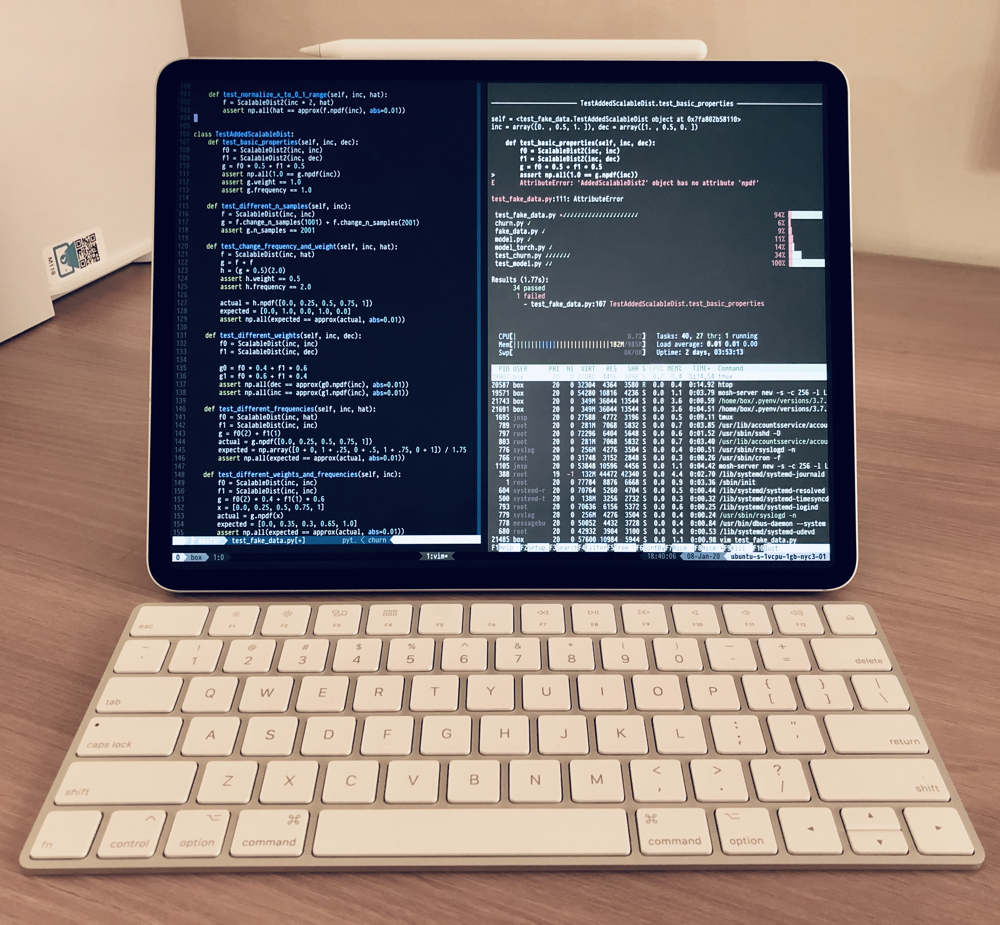

개발 서버를 따로 만들면, 어떤 기기에서든 연결하여 코딩이 가능하다. 서버를 세팅하고 아이패드를 연결해 개발한 경험을 공유한다.

발단
코딩용으로 사용하던 맥북이 갑자기 고장났다. 2주간 작업 도구가 필요하던 차에 아이패드로 코딩할 수 있지 않을까 생각이 들어 검색하니, 역시나 아이패드로 코딩하는 사람들이 있다. 꼭 아이패드가 아니어도 상관없다. 터미널을 이용해서 SSH 연결로 서버에 접속하는 방식이므로 모든 컴퓨터에서 가능하다. 심지어 핸드폰에서도 가능하다.
준비물
크게 5가지가 필요하다.
아이패드
터미널 앱
개발 서버
인터넷
외장 키보드와 텍스트 기반 에디터에 익숙한 손가락
환경 설정
개발 서버를 세팅하고 아이패드와 연결하는 과정을 설명한다. 크게 어려운 부분은 없으나, 처음에 직접 겪었던 시행착오 위주로 소개한다.
새 유저로 접속하기
Blink Shell에서 root 유저가 아니라 새로 만든 일반 유저 tester로 접속하려면 host 설정에서 user를 기존의 root에서 tester로 바꿔준다. 다른 설정은 그대로 사용한다.
이제 다시 서버에 접속하면 root 유저가 아니라 tester 유저로 접속하게 된다.
blink> ssh tester아무 문제 없이 접속 되었다면 접속 유저를 확인해보자.
> whoami
tester이제부터 개발 서버에 접속할 때는 tester 유저로 접속한다.
개발 환경 설정
이제 터미널과 서버가 생겼으니 이를 통해 직접 개발을 할 차례다. 무엇을 만드느냐에 따라서 환경 설정이 매우 다른데, 개발 환경과 관련해서는 매우 간략하게 소개만 한다. 구체적인 세팅을 모두 소개하면 글이 매우 길어질 것 같은데, 이에 대해서는 추후에 따로 정리하려고 한다. 일단 리눅스 환경에서 터미널로 작업할 때의 환경 설정을 검색하면 당장 참고할 수 있는 자료가 많다. 주제별로 참고한 글의 링크를 아래에 함께 정리한다.
Vim
Vim은 사용할 수 있는 애드인이 매우 많다. 사실상 핵심적인 IDE의 기능은 애드인으로 Vim에서 사용할 수 있다. 처음에 CLI 환경에서 Vim으로 개발을 시작하면 그 빈약한 기능 때문에 다시 화려한 IDE로 돌아가고 싶다. 어떤 애드인으로 무슨 기능을 사용할 수 있는지 몰라서 이런 경우가 생기는데, 자신이 개발하는 언어를 기반으로 검색을 해보면 Vim에서 쓸 수 있는 다양한 애드인을 찾을 수 있다. 정말 안 되는 게 없다.
좋은 점
아이패드로 CLI 환경에서 작업을 하면 좋은 점이 무척 많다.
결론
처음에는 잠깐만 아이패드를 개발용으로 쓸 생각이었다. 그런데 몇 주 쓰다보니 딱히 불편한 점이 없었고, 사소한 문제들은 항상 해결책이 있었다. 오히려 그런 제약들을 해결하느라 새로운 걸 배우고, 더 효율적으로 작업할 수 있게 되었다. 지금은 자주 고장나던 맥북을 처분하고, 아이패드로만 개발한다. 굳이 잘 쓰고 있는 랩탑을 없애고 태블릿 환경으로 옮길 필요는 없겠지만, 이렇게도 코딩할 수 있다.
참고
위의 글은 아래 링크들을 참고하였다.